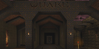

neogeographica.com is currently a collection of possibly-interesting-or-useful things I've made related to Quake and Quake 3. If those games don't float your boat then you won't find much of interest. Otherwise please use the tabs above to reach the main sections of the site!
|  | Oct 20 2014 : Quake guides updated for the new release (0.90.0) of the QuakeSpasm engine. |
| Sep 17 2014 : Various cleanup from Quake Live's changes. The 7-Zip pk3 tools are no longer useful. I've also removed any QL map versions; they have the wrong pk3 format now, and they were not designed for the new QL item behaviors. | |
 | Jul 16 2014 : Added a troubleshooting guide to the Quake guides. |
| Apr 19 2014 : Info about two Quake engines, Engoo and qbism Super8, added to the Quake guides. Fun for making Quake look retro-crunchy in either an accurate or very inaccurate way. | |
 | Feb 21 2014 : Minor update for quakesounds to support Python 3. (Ditto for the underlying expak module that does the pak file reading.) |

 ) except where indicated otherwise
) except where indicated otherwise